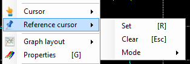

The reference cursor is an extension of the 'Main cursor' function. It permits to compare values of all traces between two particular points in the graphic.

Click on the 'Reference cursor \ Set' menu of tool bar to set the reference cursor position. This function is also accessible in the 'Reference Cursor\Set' command of the graphic window contextual menu, or by pressing the 'R' key of the keyboard.

Place the reference at the position of your choice and then click the 'Reference cursor \ Lock' command of the tool bar or the 'Reference Cursor\Lock' command of the graphic window contextual menu, or by press the 'Enter' to lock the reference cursor position and get the main cursor back on.

Main cursor being back, it can be place anywhere in the graph in order to compare the main cursor value and the reference cursor value.
Finally, once done with the comparison, click the 'Reference cursor \ Clear' command of the tool bar or the 'Reference Cursor\Clear' command of the graphic window contextual menu, or by press the 'Escape' to clear the reference cursor.
The biggest benefit of the reference cursor is that it shows both reference and main cursor values in the legend, leading to have a direct cursors value comparison.

When the reference cursor is active, four statistics are added to the legend:
There are three kinds of reference cursor:
Use the 'Reference cursor \ Mode' command of the tool bar or the 'Reference Cursor\Mode' command of the graphic window contextual menu to change the current reference cursor type.

As per the main cursor, the reference cursor aspect can be customized in the graphic configuration form. Please check the 'Cursors properties' section for more details.
Created with the Personal Edition of HelpNDoc: Free help authoring tool